Bilder
Terrassenüberdachung
Vom ersten Pfosten bis zum fertigen Dach: der Bau der neuen Überdachung über unserer Haupttribüne.
Klick auf ein Bild öffnet die Großansicht.
Juli bis September 2026
Bau der Terrassenüberdachung

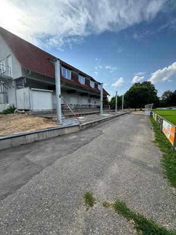

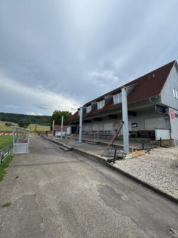

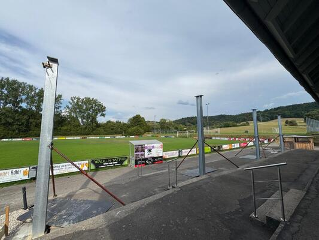

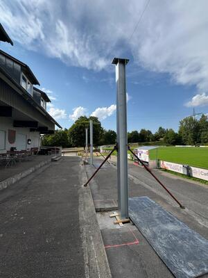

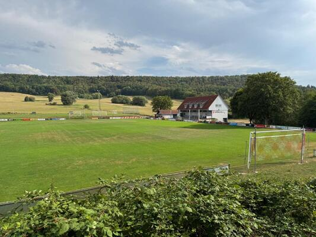

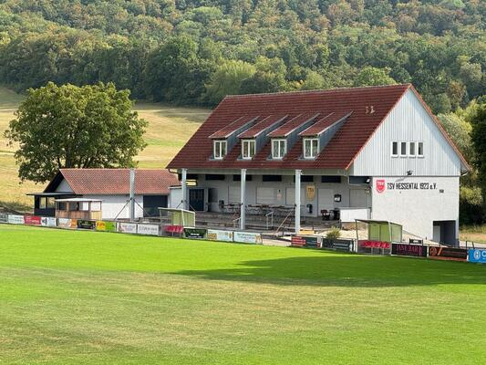

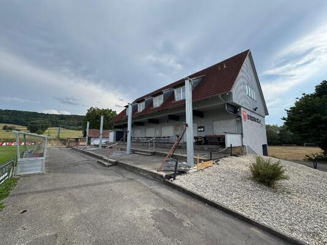

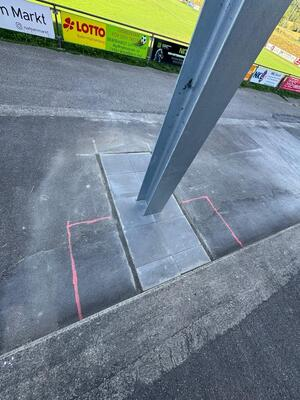

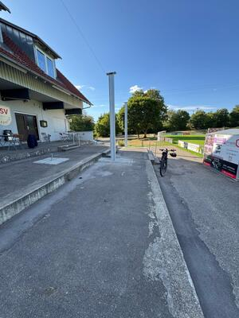

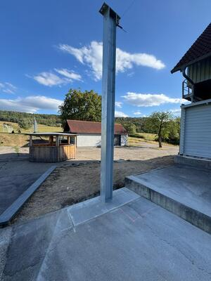

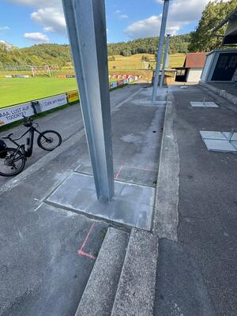

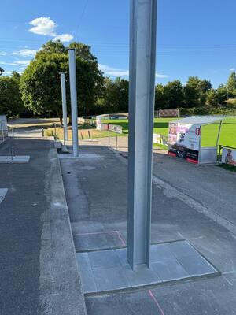

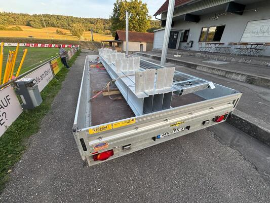

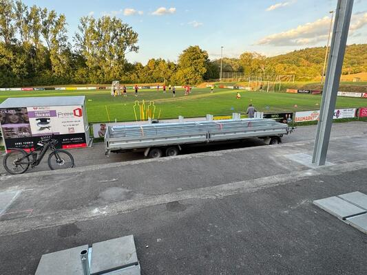

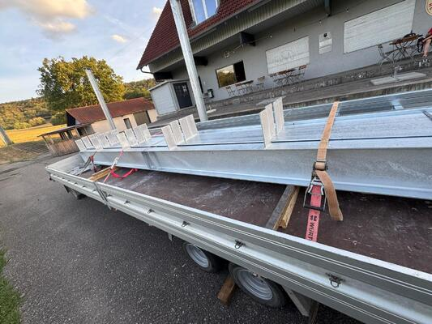

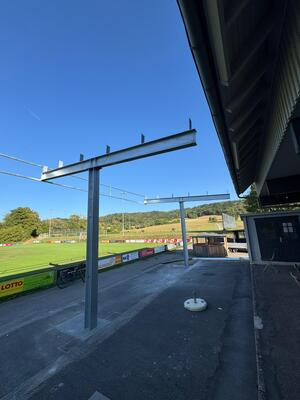

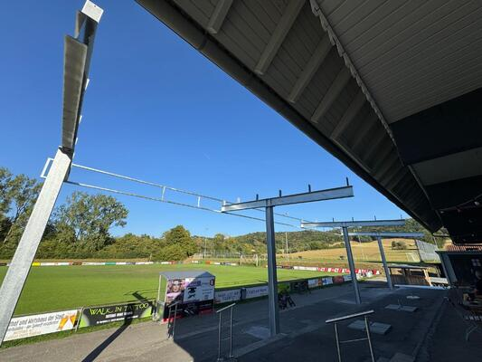

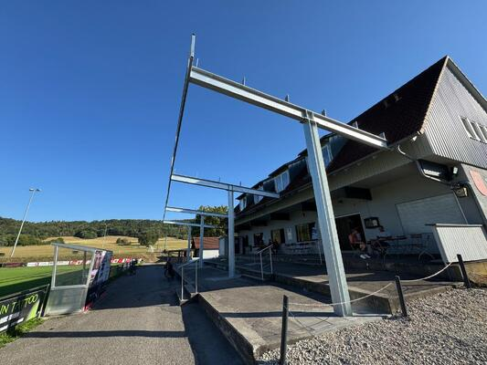

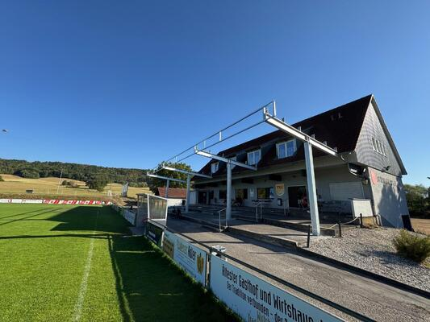

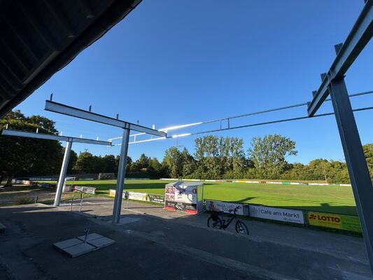

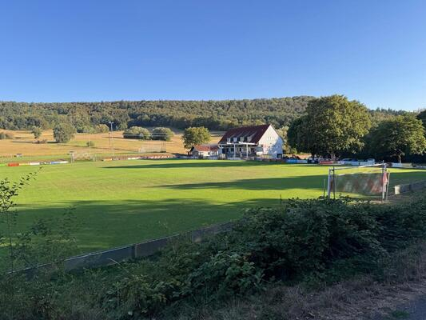

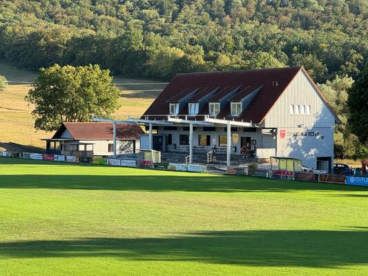

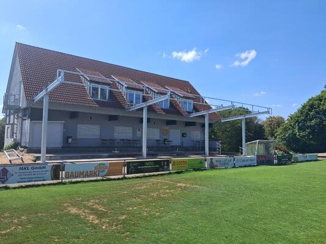

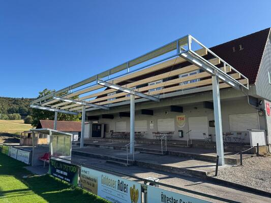

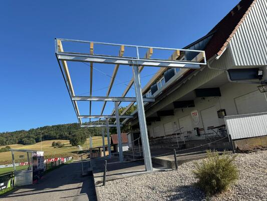

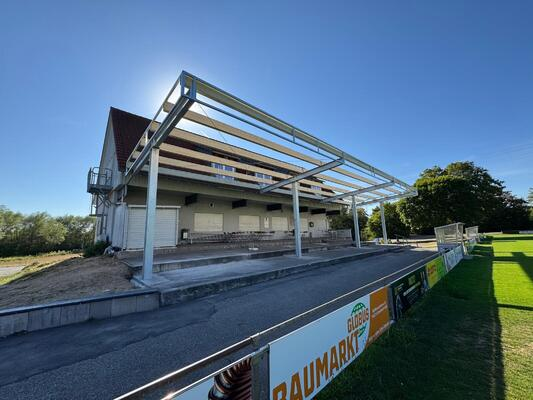

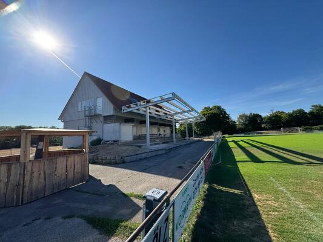

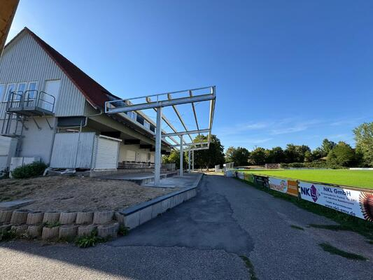

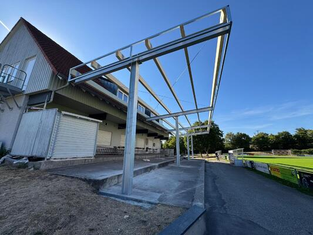

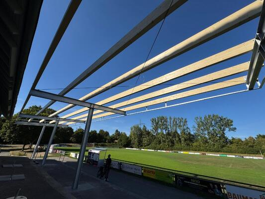

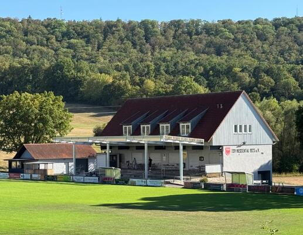

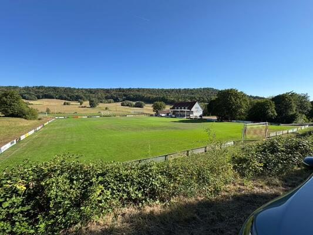

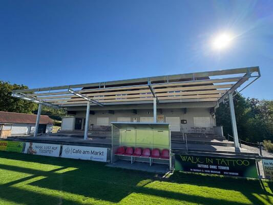

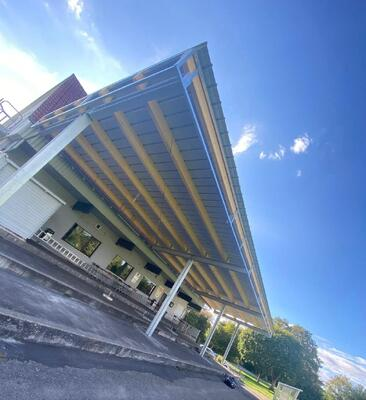

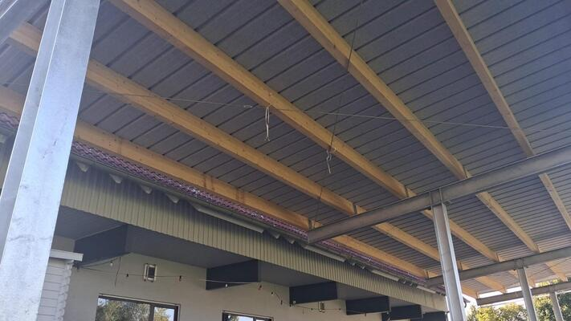

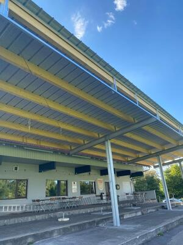

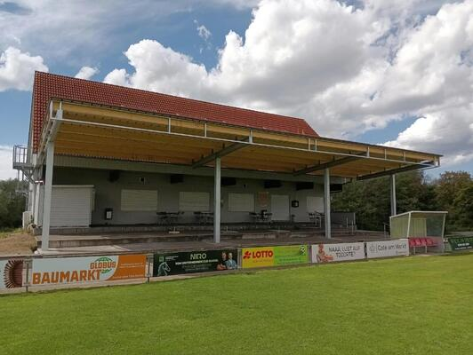

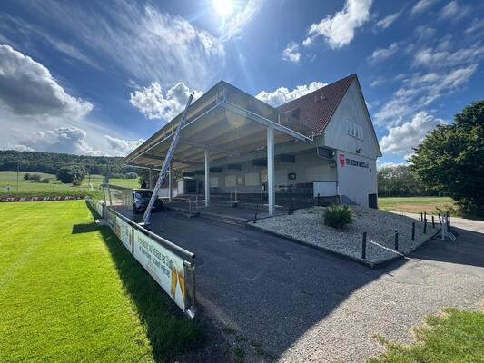

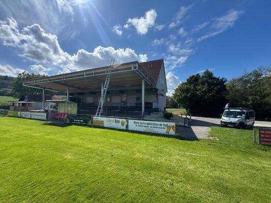

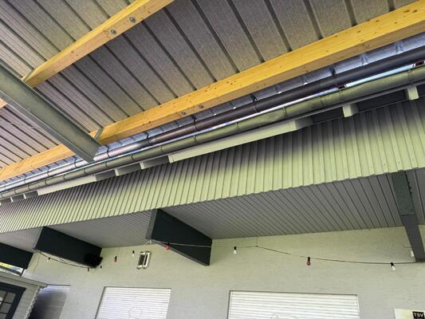

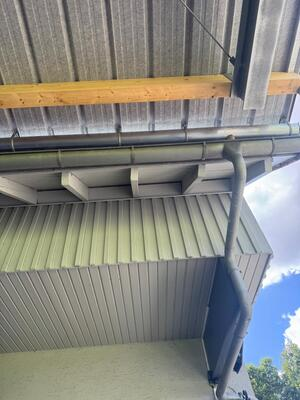

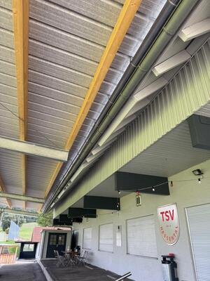

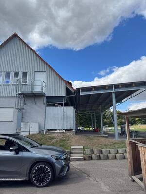

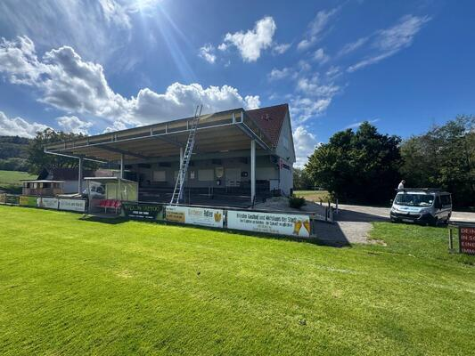